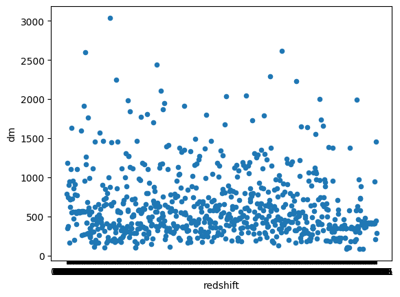
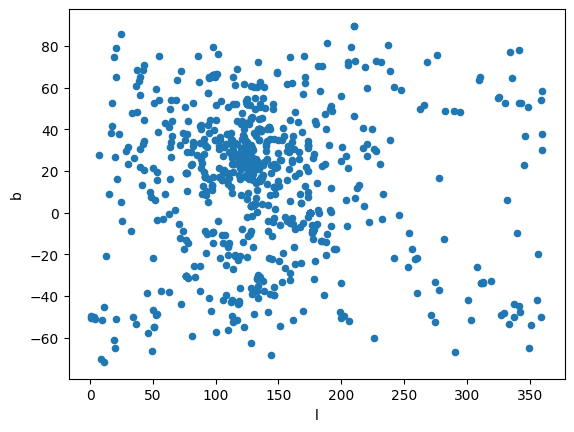

import requests
import logging
import pandas as pd
import matplotlib.pyplot as plt
from mw_plot import MWSkyMap
from astropy.coordinates import SkyCoord
import astropy.units as u
import numpy as np
%matplotlib inline
Note
📌 Goal: get data from FRBStats
def request_data(url, **kwargs) -> requests.Response:
logging.debug(f"Awaiting data from {url}")
return requests.get(url, **kwargs)
async def download_csv(url:str='https://www.herta-experiment.org/frbstats/catalogue.csv', output_file='data.csv') -> str:
result = request_data(url)
if result.status_code != 200:
raise requests.RequestException(result.status_code)
with open(output_file, 'w') as f:
f.write(result.content.decode(result.encoding))
logging.debug(f'Writing data to {output_file}')
return output_filedata = pd.read_csv(await download_csv())data| frb | utc | mjd | telescope | ra | dec | l | b | frequency | dm | flux | width | fluence | snr | reference | redshift | |
|---|---|---|---|---|---|---|---|---|---|---|---|---|---|---|---|---|
| 0 | FRB 20010125A | 2001-01-25 0:29:16 | 51934.02032 | Parkes | 19:06:53 | -40:37:14 | 356.64 | -20.02 | - | 790.3 | 0.54 | - | - | - | https://www.wis-tns.org/object/20010125a | 0.7083 |
| 1 | FRB 20010305A | 2001-03-05 12:29:16 | 51973.52032 | Parkes | 4:57:20 | -52:36:25 | 260.07 | -38.35 | 1374 | 350.0 | 0.42 | 9 | 3.78 | 10.2 | https://arxiv.org/abs/2004.04601 | 0.341 |
| 2 | FRB 20010312A | 2001-03-12 11:06:48 | 51980.46306 | Parkes | 5:26:55 | -64:56:19 | 274.72 | -33.30 | - | 1187.0 | 0.25 | - | - | - | https://www.wis-tns.org/object/20010312a | 1.0897 |
| 3 | FRB 20010621A | 2001-06-21 13:02:11 | 52081.54318 | Parkes | 18:52:05 | -8:29:35 | 25.43 | -4.00 | - | 745.0 | 0.41 | - | - | - | https://www.wis-tns.org/object/20010621a | 0.4454 |
| 4 | FRB 20010724A | 2001-07-24 19:50:02 | 52114.82641 | Parkes | 1:18:06 | -75:12:18 | 300.65 | -41.81 | - | 375.0 | 30 | - | - | - | https://www.wis-tns.org/object/20010724a | 0.369 |
| ... | ... | ... | ... | ... | ... | ... | ... | ... | ... | ... | ... | ... | ... | ... | ... | ... |
| 806 | FRB 20220105A | 2022-01-05 0:19:19 | 59584.01341 | ASKAP | 13:55:51.4 | +22:29:19.7 | 18.84 | 74.68 | 1632.5 | 583.0 | - | - | - | 10 | https://www.wis-tns.org/object/20220105a | 0.5724 |
| 807 | FRB 20220414A | 2022-04-14 17:26:40 | 59683.72685 | Tianlai | 13:04:21 | +48:18:05 | 117.02 | 68.68 | 747.5 | 208.1 | 128.4 | 2.2 | 204 | 15.1 | https://www.wis-tns.org/object/20220414a | 0.2169 |
| 808 | FRB 20220501C | 2022-05-01 2:11:09 | 59700.09108 | ASKAP | 23:29:50 | -32:27:00 | 11.26 | -71.55 | 863.5 | 449.5 | - | - | 30 | 16.1 | https://www.wis-tns.org/object/20220501c | 0.4558 |
| 809 | FRB 20220610A | 2022-06-10 22:26:43 | 59740.93522 | ASKAP | 23:23:60 | -33:31:00 | 8.87 | -70.13 | 1271.5 | 1458.1 | - | 5.6 | 43 | 29.8 | https://www.wis-tns.org/object/20220610a | 1.3836 |
| 810 | FRB 20220725A | 2022-07-25 21:54:53 | 59785.91311 | ASKAP | 22:26:60 | +34:52:60 | 92.14 | -19.21 | 919.5 | 290.4 | - | - | - | 12.7 | https://www.wis-tns.org/object/20220725a | 0.2591 |
811 rows × 16 columns
data[['ra', 'dec', 'l', 'b', 'frequency', 'dm', 'flux', 'width', 'fluence', 'snr', 'redshift']].describe()| l | b | dm | |
|---|---|---|---|
| count | 811.000000 | 811.000000 | 811.000000 |
| mean | 140.128890 | 13.971689 | 603.167531 |
| std | 66.823504 | 33.066918 | 416.749504 |
| min | 0.740000 | -71.550000 | 87.750000 |
| 25% | 105.395000 | -8.155000 | 347.760000 |
| 50% | 129.710000 | 16.620000 | 469.880000 |
| 75% | 171.525000 | 35.415000 | 734.000000 |
| max | 359.830000 | 89.530000 | 3037.700000 |
data.plot.scatter(x='redshift', y='dm')<AxesSubplot: xlabel='redshift', ylabel='dm'>
data.plot.scatter(x='l', y='b')<AxesSubplot: xlabel='l', ylabel='b'>
# Set projection & properties
canvas = MWSkyMap(projection='aitoff', grayscale=False, figsize=(20, 12.5))
# alpha value for the milkyway image
canvas.imalpha = 1.
# set up plot title
canvas.title = r'$\mathrm{FRB \ } l \mathrm{-} b \mathrm{ \ Distribution}$'+'\n'
canvas.fontsize = 48coords = SkyCoord(ra=data['ra'][0], dec=data['dec'][0], unit=(u.hourangle, u.deg))
coords<SkyCoord (ICRS): (ra, dec) in deg
(286.72083333, -40.62055556)>galcoords = SkyCoord(l=data['l'][0], b=data['b'][0], unit='deg', frame='galactic')
galcoords<SkyCoord (Galactic): (l, b) in deg
(356.64, -20.02)>def to_sky_coord(row) -> SkyCoord:
return SkyCoord(l=row['l'], b=row['b'], unit='deg', frame='galactic')
data['galactic'] = data.apply(lambda x: to_sky_coord(x), axis=1)
data| frb | utc | mjd | telescope | ra | dec | l | b | frequency | dm | flux | width | fluence | snr | reference | redshift | galactic | |
|---|---|---|---|---|---|---|---|---|---|---|---|---|---|---|---|---|---|
| 0 | FRB 20010125A | 2001-01-25 0:29:16 | 51934.02032 | Parkes | 19:06:53 | -40:37:14 | 356.64 | -20.02 | - | 790.3 | 0.54 | - | - | - | https://www.wis-tns.org/object/20010125a | 0.7083 | <SkyCoord (Galactic): (l, b) in deg\n (356.... |
| 1 | FRB 20010305A | 2001-03-05 12:29:16 | 51973.52032 | Parkes | 4:57:20 | -52:36:25 | 260.07 | -38.35 | 1374 | 350.0 | 0.42 | 9 | 3.78 | 10.2 | https://arxiv.org/abs/2004.04601 | 0.341 | <SkyCoord (Galactic): (l, b) in deg\n (260.... |
| 2 | FRB 20010312A | 2001-03-12 11:06:48 | 51980.46306 | Parkes | 5:26:55 | -64:56:19 | 274.72 | -33.30 | - | 1187.0 | 0.25 | - | - | - | https://www.wis-tns.org/object/20010312a | 1.0897 | <SkyCoord (Galactic): (l, b) in deg\n (274.... |
| 3 | FRB 20010621A | 2001-06-21 13:02:11 | 52081.54318 | Parkes | 18:52:05 | -8:29:35 | 25.43 | -4.00 | - | 745.0 | 0.41 | - | - | - | https://www.wis-tns.org/object/20010621a | 0.4454 | <SkyCoord (Galactic): (l, b) in deg\n (25.4... |
| 4 | FRB 20010724A | 2001-07-24 19:50:02 | 52114.82641 | Parkes | 1:18:06 | -75:12:18 | 300.65 | -41.81 | - | 375.0 | 30 | - | - | - | https://www.wis-tns.org/object/20010724a | 0.369 | <SkyCoord (Galactic): (l, b) in deg\n (300.... |
| ... | ... | ... | ... | ... | ... | ... | ... | ... | ... | ... | ... | ... | ... | ... | ... | ... | ... |
| 806 | FRB 20220105A | 2022-01-05 0:19:19 | 59584.01341 | ASKAP | 13:55:51.4 | +22:29:19.7 | 18.84 | 74.68 | 1632.5 | 583.0 | - | - | - | 10 | https://www.wis-tns.org/object/20220105a | 0.5724 | <SkyCoord (Galactic): (l, b) in deg\n (18.8... |
| 807 | FRB 20220414A | 2022-04-14 17:26:40 | 59683.72685 | Tianlai | 13:04:21 | +48:18:05 | 117.02 | 68.68 | 747.5 | 208.1 | 128.4 | 2.2 | 204 | 15.1 | https://www.wis-tns.org/object/20220414a | 0.2169 | <SkyCoord (Galactic): (l, b) in deg\n (117.... |
| 808 | FRB 20220501C | 2022-05-01 2:11:09 | 59700.09108 | ASKAP | 23:29:50 | -32:27:00 | 11.26 | -71.55 | 863.5 | 449.5 | - | - | 30 | 16.1 | https://www.wis-tns.org/object/20220501c | 0.4558 | <SkyCoord (Galactic): (l, b) in deg\n (11.2... |
| 809 | FRB 20220610A | 2022-06-10 22:26:43 | 59740.93522 | ASKAP | 23:23:60 | -33:31:00 | 8.87 | -70.13 | 1271.5 | 1458.1 | - | 5.6 | 43 | 29.8 | https://www.wis-tns.org/object/20220610a | 1.3836 | <SkyCoord (Galactic): (l, b) in deg\n (8.87... |
| 810 | FRB 20220725A | 2022-07-25 21:54:53 | 59785.91311 | ASKAP | 22:26:60 | +34:52:60 | 92.14 | -19.21 | 919.5 | 290.4 | - | - | - | 12.7 | https://www.wis-tns.org/object/20220725a | 0.2591 | <SkyCoord (Galactic): (l, b) in deg\n (92.1... |
811 rows × 17 columns
canvas.scatter(ra=data['ra'].to_numpy()*u.degree, dec=data['dec'].to_numpy()*u.degree, s=150, alpha=0.6, edgecolor='white', linewidth=0.85, cmap='plasma')TypeError: unsupported operand type(s) for *: 'numpy.ndarray' and 'Unit'